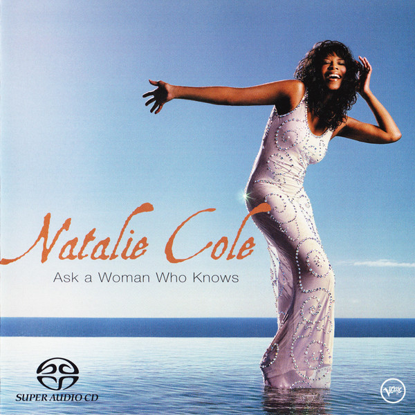

SACD
Ask A Woman Who Knows
Natalie Cole
Media: — · Sleeve: —
—
Personal
Discogs SuggestedCA$80.83
Discogs MedianCA$80.83
Discogs HighCA$80.83
- Physical Copy ID
- BB-SACD-047
- Year
- 2002
- Label
- Verve Records
- Catalog #
- 589 915-2
- Country
- USUS
- Genre / Style
- Jazz, Pop · Soul-Jazz, Smooth Jazz, Vocal, Contemporary Jazz, Ballad